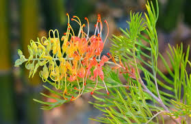
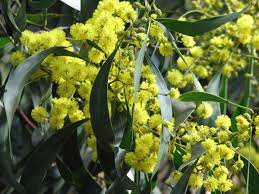
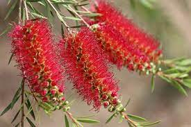

Grevillea
Many species of grevilleas are popular garden plants as they look beautiful, have a diverse range of flowers and leaf shape, and are bird attracting.
Banksia

Banksias are heavy producers of nectar, making them an important source of food for nectivorous animals, including honeyeaters and small mammals such as honey possums, pygmy possums, gliders and bats.
Acacia
Acacia, commonly known as the wattle, is a large genus of shrubs and trees. They are fast growing in the garden and are great to fill a gap. The Golden Wattle is Australia's National floral emblem.
Callistemon
Mostly known as the Bottlebrush due to the shape and look of the flower head, these flower profusely mostly in the warmer months. They are bird attracting and can be grown in a pot.